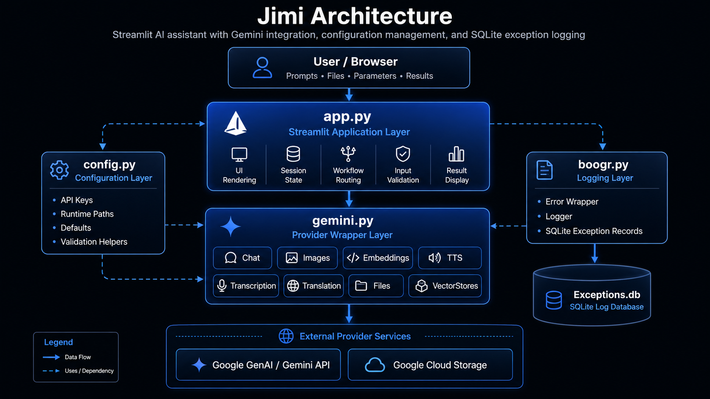

🏗️ Architecture¶

Jimi is a Streamlit-based AI assistant application that combines local application state, configurable model wrappers, Google Gemini services, file processing workflows, semantic search patterns, SQLite-backed logging, and MkDocs-compatible source documentation. The architecture separates user-interface orchestration from provider-specific service wrappers so that the application can expose multiple AI workflows without coupling the Streamlit page directly to every API implementation detail.
The application is organized around four primary concerns:
- User interaction through
app.py - Provider integration through
gemini.py - Configuration and runtime paths through
config.py - Exception capture and durable logging through
boogr.py
Together, these modules provide the foundation for text generation, document analysis, image workflows, embeddings, text-to-speech, transcription, translation, file management, vector-store style storage, and exception diagnostics.
🧭 System Overview¶
At runtime, Jimi starts from the Streamlit application layer. The user selects a workflow, provides input, uploads files when needed, and configures model parameters through the interface. The interface then calls one of the wrapper classes responsible for a specific capability.
┌─────────────────────────────────────────────────────────────────────┐
│ User Browser │
│ │
│ Prompts • Files • Parameters • Buttons • Search • Results │
└───────────────────────────────┬─────────────────────────────────────┘
│
▼
┌─────────────────────────────────────────────────────────────────────-┐
│ app.py │
│ │
│ Streamlit UI │
│ Session State │
│ Workflow Routing │
│ Input Validation │
│ Result Rendering │
│ Error Display │
└───────────────┬───────────────────────────────┬─────────────────────-┘
│ │
▼ ▼
┌───────────────────────────────┐ ┌───────────────────────────────┐
│ gemini.py │ │ config.py │
│ │ │ │
│ Chat │ │ API Keys │
│ Images │ │ Runtime Paths │
│ Embeddings │ │ Constants │
│ TTS │ │ Defaults │
│ Transcription │ │ Validation Helpers │
│ Translation │ │ Logging Paths │
│ Files │ │ │
│ VectorStores │ └───────────────────────────────┘
└───────────────┬───────────────┘
│
▼
┌─────────────────────────────────────────────────────────────────────┐
│ External Provider Services │
│ │
│ Google GenAI API │
│ Google Cloud Storage │
│ Gemini File APIs │
│ Gemini Content Generation │
│ Gemini Embeddings │
│ Gemini TTS / Audio Understanding │
└───────────────┬─────────────────────────────────────────────────────┘
│
▼
┌─────────────────────────────────────────────────────────────────────┐
│ boogr.py │
│ │
│ Error Wrapper │
│ Exception Metadata │
│ SQLite Logger │
│ Exceptions Table │
│ Diagnostic Trace Capture │
└─────────────────────────────────────────────────────────────────────┘
🧱 Core Modules¶
app.py¶
The app.py module is the main Streamlit entry point. It owns the page configuration, layout,
sidebar controls, workflow selection, session-state initialization, user input handling, result
rendering, and workflow dispatch logic.
Its responsibilities include:
- Initializing and maintaining Streamlit session state.
- Rendering model and mode selectors.
- Capturing prompts, uploaded files, URLs, tool selections, and model parameters.
- Routing user actions to the correct backend wrapper.
- Displaying generated text, image results, audio outputs, search results, status messages, and errors.
- Preserving user-facing fallback behavior when optional workflows fail.
- Logging handled exceptions through the shared logging pattern.
The application layer should remain focused on user interaction and orchestration. Provider-specific
API details belong in wrapper modules such as gemini.py.
gemini.py¶
The gemini.py module contains the Google Gemini integration layer. It exposes capability-specific
wrapper classes that normalize application inputs into Google GenAI SDK calls.
The primary classes are:
| Class | Responsibility |
|---|---|
Gemini |
Base configuration and shared attribute state for Gemini wrappers. |
Chat |
Text generation, tool-grounded generation, structured history, and multimodal prompt construction. |
Images |
Image generation, image analysis, image editing, grounding metadata capture, and response extraction. |
Embeddings |
Text embedding generation for semantic search and vector workflows. |
TTS |
Text-to-speech generation using Gemini TTS models. |
Transcription |
Audio transcription through Gemini audio understanding. |
Translation |
Speech translation from audio input into a target language. |
Files |
File upload, retrieval, listing, deletion, summarization, and file-based prompting. |
VectorStores |
Google Cloud Storage-backed collection and object management. |
The wrapper design keeps model-specific request construction outside the Streamlit UI. This allows
app.py to call high-level methods such as generate_text, generate, analyze, create,
transcribe, translate, upload, or delete without duplicating SDK configuration logic.
config.py¶
The config.py module centralizes runtime configuration. It provides constants, environment-driven
values, local paths, API settings, logging paths, and validation helpers.
Typical configuration responsibilities include:
- API key lookup.
- Model identifiers.
- Application paths.
- Logging database paths.
- SQLite table names.
- Streamlit branding paths.
- Helper functions such as
throw_if.
The configuration layer allows the rest of the application to avoid hard-coded paths and credentials. When the environment changes, the configuration can be updated without rewriting the application logic.
boogr.py¶
The boogr.py module provides the shared exception-handling infrastructure.
It typically contains:
| Component | Purpose |
|---|---|
Error |
Wraps an exception with structured metadata such as module, cause, method, message, info, and trace. |
Logger |
Writes structured exception records to the configured SQLite database. |
This pattern creates a consistent diagnostic trail across the application. Each handled exception can be associated with the module, class, method, and root cause that produced it.
The standard pattern is:
except Exception as e:
ex = Error( e )
ex.module = 'module_name'
ex.cause = 'ClassOrWorkflow'
ex.method = 'method_signature'
Logger( ).write( ex )
raise ex
For fallback handlers that should not crash the Streamlit interface, the same logging pattern is used, but the original fallback behavior is preserved.
🔁 Request Flow¶
A typical text-generation request follows this sequence:
User enters prompt
│
▼
app.py validates prompt and options
│
▼
app.py builds workflow parameters
│
▼
Chat.generate_text(...) is called
│
▼
Chat builds contents and GenerateContentConfig
│
▼
Google GenAI client sends request
│
▼
Gemini returns GenerateContentResponse
│
▼
Chat extracts output text
│
▼
app.py renders response in Streamlit
This sequence keeps UI behavior and provider behavior separate. The Streamlit layer does not need to understand the full GenAI request schema; it only passes normalized values to the wrapper.
🧠 Text Generation Architecture¶
Text generation is centered on the Chat wrapper. It accepts a prompt and optional model settings,
then constructs the necessary Gemini content payload and generation configuration.
Primary responsibilities include:
- Resolving the active Gemini API key.
- Normalizing tool selections.
- Building conversation history.
- Constructing
GenerateContentConfig. - Supporting grounding tools where available.
- Supporting streaming and non-streaming responses.
- Returning clean text output to the UI.
This design supports simple prompting, structured conversations, search-grounded responses, URL context, code execution, and future tool expansion without forcing those details into the Streamlit page.
🖼️ Image Workflow Architecture¶
Image workflows are handled by the Images wrapper. The wrapper supports text-to-image generation,
image analysis, and image editing.
Prompt / Image Path / Model Options
│
▼
Images wrapper
│
├── Builds image configuration
├── Opens local image when needed
├── Adds grounding tool when selected
├── Sends Gemini request
├── Captures grounding metadata
└── Extracts image or text output
The wrapper separates image-specific configuration from the UI. This includes aspect ratio, resolution, output MIME type, response modality, search grounding, and returned image extraction.
🔎 Embedding and Semantic Search Architecture¶
Embeddings are generated through the Embeddings wrapper. The application can use embeddings to
support semantic comparison, retrieval workflows, vector-like search, and document similarity.
A typical embedding workflow is:
Text input
│
▼
Embeddings.create(...)
│
▼
Gemini embedding model
│
▼
Vector representation
│
▼
Similarity or retrieval workflow
The architecture isolates embedding generation from downstream semantic search behavior. This allows future vector storage backends to be added without changing the core embedding interface.
📄 File and Document Architecture¶
File workflows are split between Streamlit upload handling in app.py and Gemini file operations in
gemini.py.
The Files wrapper supports:
- Uploading local files.
- Retrieving file metadata.
- Listing available remote files.
- Deleting files.
- Summarizing documents.
- Searching document content through file-based prompts.
- Surveying multiple files.
The application can therefore support document Q&A and document summarization without embedding file API calls directly inside UI callbacks.
🗂️ Vector Store Architecture¶
The VectorStores wrapper treats Google Cloud Storage buckets as collection backends and blobs as
stored objects. This design gives the application a simple storage abstraction using Google Cloud
Storage primitives.
Collection Name
│
▼
GCS Bucket / Prefix
│
▼
Blob Objects
│
▼
Stored documents, data files, or vector assets
The wrapper supports create, upload, retrieve, list, and delete operations. It provides a foundation for managing reusable data assets and document collections.
🔊 Audio Architecture¶
Jimi supports audio-related workflows through dedicated wrappers:
| Wrapper | Capability |
|---|---|
TTS |
Converts text to speech and returns WAV bytes or writes a WAV file. |
Transcription |
Converts spoken audio into text. |
Translation |
Translates spoken audio into another language. |
Each audio workflow follows the same architectural pattern:
User-provided text or audio file
│
▼
app.py captures inputs and options
│
▼
Audio wrapper builds prompt/config
│
▼
Gemini model processes request
│
▼
Text or audio output returns to app.py
This keeps audio-specific prompt construction, MIME handling, and response extraction inside the appropriate wrapper class.
⚙️ Configuration Flow¶
Configuration values are resolved through config.py. This creates a stable boundary between
runtime environment settings and application logic.
Environment / Local Constants
│
▼
config.py
│
├── API keys
├── model names
├── file paths
├── database paths
├── logging table names
└── validation helpers
│
▼
app.py and gemini.py consume settings
This approach avoids scattered constants and allows the same codebase to run across local development, GitHub-hosted documentation, and deployed environments with fewer code changes.
🧾 Logging and Exception Architecture¶
Exception handling is centralized around the Error and Logger classes.
The application uses a consistent exception pattern so that failures contain enough context to diagnose the module, workflow, and method involved.
Exception raised
│
▼
Error object wraps original exception
│
▼
module / cause / method fields are assigned
│
▼
Logger writes structured record to SQLite
│
▼
Original behavior is preserved:
- raise for hard failures
- fallback return for recoverable UI paths
- continue/pass for non-critical loops
This pattern is especially important for Streamlit applications because UI errors can otherwise disappear into the browser session without durable diagnostics.
🧩 Documentation Architecture¶
Jimi’s documentation uses MkDocs Material and mkdocstrings. The source files are documented with Google-style docstrings so the API reference can be generated directly from the Python modules.
Python source files
│
▼
Google-style docstrings
│
▼
mkdocstrings
│
▼
MkDocs Material pages
│
▼
GitHub Pages documentation site
The documentation pipeline depends on consistent docstring structure:
def example_method(value: str) -> str:
"""
Purpose:
Performs a specific application operation using validated input.
Args:
value: Input value required by the operation.
Returns:
Processed string value.
Raises:
Error: Wraps and logs exceptions raised during processing.
"""
This format allows MkDocs and griffe to parse comments reliably.
🧪 Validation Architecture¶
The project should be validated at three levels:
Source validation¶
python -m py_compile .\app.py
python -m py_compile .\boogr.py
python -m py_compile .\config.py
python -m py_compile .\gemini.py
Package validation¶
Documentation validation¶
These checks verify syntax, import viability, docstring compatibility, and documentation generation.
📦 Deployment Architecture¶
The application and documentation have separate deployment paths.
| Component | Deployment Target |
|---|---|
| Streamlit application | Local runtime or hosted app service |
| Source repository | GitHub |
| Documentation site | GitHub Pages |
| API documentation | MkDocs generated site |
| Logs | Local SQLite database |
| Remote assets | Gemini Files API or Google Cloud Storage |
The GitHub Pages documentation site is generated from the docs/ directory and mkdocs.yml. The
Streamlit app remains executable from the Python source.
🔐 Security Considerations¶
Jimi should keep secrets, tokens, and credentials outside source-controlled code. API keys should be loaded from environment variables or local configuration that is excluded from the repository.
Recommended practices include:
- Do not commit
.envfiles. - Do not hard-code API keys.
- Keep SQLite logs out of public documentation.
- Avoid logging sensitive prompt content unless explicitly required.
- Keep uploaded files out of source control.
- Use
.gitignorefor runtime artifacts, caches, local databases, and generated outputs.
🧰 Maintainability Principles¶
The architecture follows several practical maintainability rules:
-
UI code should orchestrate, not implement providers.
app.pyshould call wrapper methods instead of building provider-specific request payloads inline. -
Provider wrappers should own provider details.
gemini.pyshould own Gemini SDK configuration, request construction, and response extraction. -
Configuration should be centralized. Paths, keys, defaults, model names, and logging settings should live in
config.py. -
Exceptions should be logged consistently. Every handled exception should create one
Errorobject, write it once withLogger, and preserve the intended control flow. -
Documentation should be generated from source. Google-style docstrings should remain compatible with MkDocs and mkdocstrings.
-
Fallback behavior should be preserved. Optional UI workflows should log errors without converting recoverable failures into hard crashes.
🧭 Architecture Summary¶
Jimi is structured as a modular Streamlit application with a clear separation between presentation, configuration, provider integration, storage, and diagnostics.
The high-level architecture can be summarized as:
Streamlit UI
│
├── Configuration from config.py
├── Gemini workflows from gemini.py
├── Exception logging through boogr.py
├── Local and remote file workflows
├── Semantic and embedding workflows
└── MkDocs documentation generated from source comments
This design makes Jimi easier to document, debug, extend, and publish. New models, workflows, pages, or documentation sections can be added without requiring a full rewrite of the application.